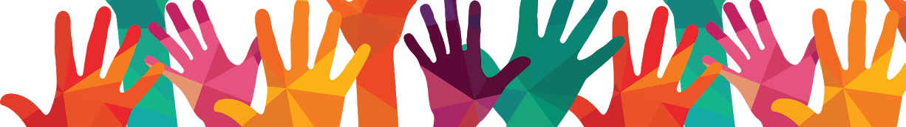
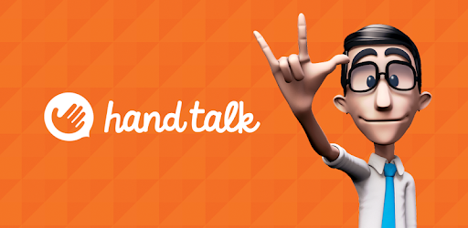
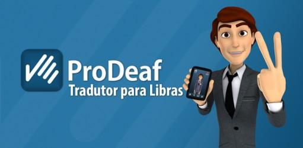
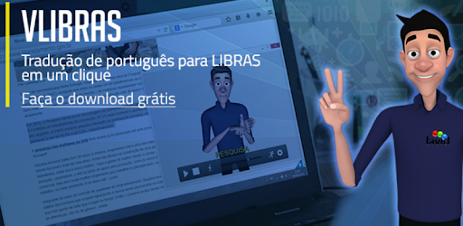
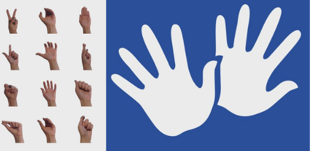
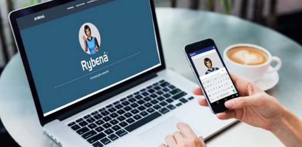
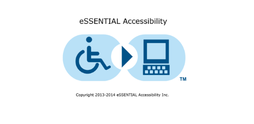

Acessibilidade para surdos na web
"Art. 63. É obrigatória a acessibilidade nos sítios da internet mantidos por empresas com sede ou representação comercial no país ou por órgãos do governo, para uso de qualquer pessoa com deficiência, garantindo-lhe acesso às informações disponíveis, conforme as melhores práticas e diretrizes de acessibilidade adotadas internacionalmente."
§ 1º - "Os sítios devem conter símbolo de acessibilidade em destaque."
O regulamento em questão é a Lei Brasileira de Inclusão da pessoa com deficiência - n.º 13.146/2015 -, mais especificamente um trecho de seu Título III, da Acessibilidade, capítulo II.
Assim, como qualquer cidadão, as pessoas com deficiência também utilizam a internet diariamente, seja por lazer, pesquisas ou trabalho. Portanto, nada mais justo que haja uma legislação para esse público, garantindo a acessibilidade na web.
Por que tornar seu site acessível?
É com a internet que as informações transitam livre e rapidamente entre as pessoas, sendo o principal meio de comunicação, as páginas web permitem que todos dias milhares de pessoas saibam o que está acontecendo no mundo.
Segundo a Organização Mundial da Saúde existem 500 milhões de surdos ou pessoas com deficiência auditiva no mundo, desse total, por volta de 10,7 milhôes são brasileiros, e de acordo com a Federação Mundial dos Surdos (WFD), 80% dos surdos de todo o mundo têm baixa escolaridade ou problemas de alfabetização, o que dificulta sua compreensão com a língua oficial escrita de cada país.
Tornar seu conteúdo digital acessível, é um questão de cumprimento da lei e também uma forma de fazer com que todos tenham completo acesso à informação. Incluir ferramentas de acessibilidade traz mais visitantes ao seu site, além de melhorar o rankeamento no Google.
Ferramentas de acessibilidade
Há algumas formas de tornar os conteúdos digitais acessíveis para surdos. Confira eles logo a baixo:
Legenda: Alternativa para vídeos, é opção de disponibilizar legenda, podendo ser abertas (OS) ou fechadas (CC), nesta última o usuário pode desabilitar ou ativar a função. É a legenda estar com uma fonte legível, em Arial ou Times New Roman, e exibir informações adicionais como indicação da personagem falante e os efeitos sonoros e sons ambiente, aparecendo entre colchetes.
Transcrição: Disponibilizar a transcrição do vídeo ou áudio ajuda para que a pessoa possa compreender o conteúdo que por vezes não é possível somente com a legendagem. Estenotipia, é a transcrição em tempo real, existem plataformas que realizam esse serviço, como Web Captioner e Live Transcribe. Contudo, a taxa de assertividade da transcrição de um arquivo de mídia é ainda muito baixa.
Avatares tradutores: São plugins que podem ser adicionados a páginas web e que ao ativá-las, o texto disponível no site é interpretado pelo avatar. Uma das formas mais completas de acessibilidade, mas que ainda precisa ser melhorada, pois um grande problema dessa ferramenta é a falta de expressões faciais e movimentção corporal necessários para o entendi do que está sendo interpretado.
Intérpretes: Com certeza a melhor opção para vídeos, ter seu conteúdo de mídia traduzido por um intérprete trará uma compreensão completa do que você está querendo transmitir. Importante eles terem um local reservado na ambientação do vídeo, com um segundo plano de fundo e que seja visível aos seus telespectadores.
6 programas e sites que podem ajudar
Hand Talk

Eleito o melhor app social do mundo pela ONU e disponível para dispositivos móveis com Android, iOS e Windows Phone, o aplicativo traduz simultaneamente texto e áudio para a linguagem de sinais. Ele permite implementar o tradutor ao seu site, criando páginas web acessíveis.
ProDeaf

ProDeaf era um dos programas de tradução entre português e libras mais conhecidos e utilizados. Ele possuia versão web e aplicativos para smartphones e tablets com Android e iOS, realizando a tradução em tempo real. Ele realizava as traduções através de textos escritos e com o reconhecimento de voz. Desde 2018 o ProDeaf se juntou ao Hand talk para promover ainda mais a acessibilidade em libras.
VLibras

VLibras é um programa brasileiro que realiza o serviço de tradução em tempo real de linguagem de sinais para o português. O serviço está disponível como aplicativo para Android e iOS, em extensão para os navegadores Google Chrome, Safari e Firefox e também em software para Windows e Linux. Ele traduz de forma eficiente textos selecionados em páginas da web para a linguagem brasileira de sinais e promete ser um auxiliador para os deficientes auditivos.
Uni Libras

O aplicativo Uni Libras está disponível para smartphones e tablets com o sistema operacional iOS. Ele funciona como um dicionário português-libras e permite realizar traduções ao digitar uma palavra na língua portuguesa, que será traduzida para a linguagem brasileira de sinais. Ele suporta fotos, vídeos e também oferece a opção de buscas na Internet, para facilitar ainda mais a comunicação.
Rybená

Rybená é um instituto de inclusão digital em libras e voz, que pertence ao Grupo ICTS e possui um aplicativo próprio com o mesmo nome, disponível para dispositivos móveis com Android ou iOS. Com uma tecnologia totalmente nacional, ele permite realizar traduções de textos e voz de português para libras, facilitando a comunicação com as pessoas com necessidades especiais.
Essential Accessibility

Já o Essential Accessibility é uma ferramenta assistiva desenvolvida para oferecer acessibilidade multimídia, garantindo que conteúdos em áudio e vídeo contenham legendas, transcrições e audiodescrições para pessoas com diferentes tipos de deficiência.
A lista inclui diferentes perfis de usuários que apresentam dificuldade em utilizar o mouse e o teclado devido a fatores relacionadas a:
- Idade;
- Derrame;
- Paralisia;
- Artrite;
- Artrose;
- Barreiras congênitas;
- Esclerose múltipla;
- Paralisia cerebral;
- Mal de Parkinson;
- Deficientes auditivos;
- Deficientes visuais;
- Pessoas com dificuldades de aprendizado.